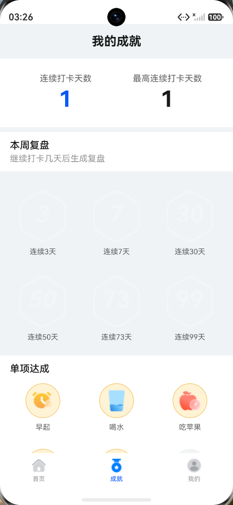
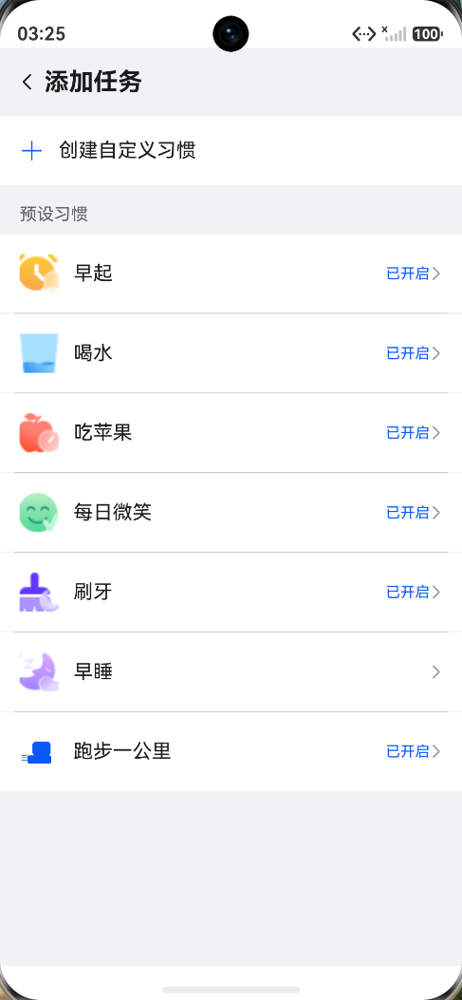
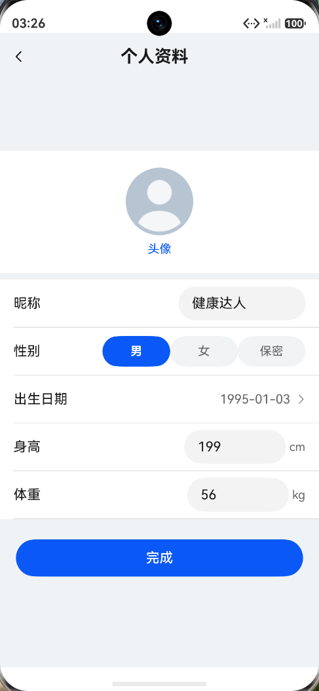
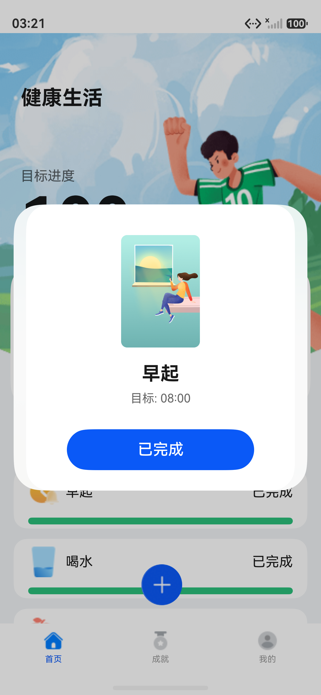

首页：每日使用中心
健康生活标题、目标进度、周日历、任务列表、底部导航。
本页只写仓库提交和实际验证能够支撑的内容。截图来自手动补全的真实页面： 首页、添加任务、自定义习惯、编辑提醒、月视图、成就页、我的页面和个人资料页。 点击任意功能图，可以展开查看对应页面和说明。

先展示应用最核心的三个入口页面：用户每天打开的首页、查看激励反馈的成就页、管理个人信息的我的页。
健康生活标题、目标进度、周日历、任务列表、底部导航。
连续打卡天数、最高连续天数、周复盘、单项达成。
用户信息、动态等级、个人资料入口和检查更新入口。
按 Git 历史整理，不把未提交或未验证的想法写成已完成功能。
b191a29
这是 7 月 9 日晚上的主功能扩展提交，扩展了任务目录、首页、提醒、月历和测试体系。
 对应截图：编辑任务页展示目标设置、提醒开关、提醒时间和提醒频率。
对应截图：编辑任务页展示目标设置、提醒开关、提醒时间和提醒频率。
210813c
这是 7 月 10 日中午的主功能提交，覆盖月历稳定化、智能目标、补救机制、多维成就和自定义任务 MVP。
 对应截图：单项达成和超额达成区域体现多维成就扩展。
对应截图：单项达成和超额达成区域体现多维成就扩展。
bd5583c
根因是把 Resource 数字 id 当作字符串 key 使用，导致任务列表 fallback 显示数字。

对应截图：预设任务名称已正确显示为早起、喝水等中文名称。c7f0ec3
根因是编辑态切换导致 TextInput 在 @Builder 重建时内容被覆盖清空。

对应截图：个人资料页展示昵称、性别、出生日期、身高、体重编辑。4221605
这次提交围绕自定义任务完整编辑、非执行日统计、服务卡片显示和创建校验做了收口。
 对应截图：自定义习惯创建表单展示名称、图标、类型、目标、单位、执行星期。
对应截图：自定义习惯创建表单展示名称、图标、类型、目标、单位、执行星期。
206c04b
这是审查后的质量修复提交，集中处理成就、提醒、卡片和补救流程中的边界问题。
这里把截图没有完全展示的内容，用代码模块和测试文件说明清楚。
TaskCatalog 定义预设任务；TaskInfo 扩展自定义任务元数据；AddTaskPage 和 EditTaskPage 负责创建与编辑；HomeStore 负责 create/update/archive。

TaskRules 支持 ONCE、VALUE、TIME 三种任务类型；打卡后弹窗反馈任务状态，完成结果参与 DayInfo 统计。

WeekCalendar 展示周粒度入口；MonthView 展示 6x7 月历网格；HomeStore 维护 monthViewDate、monthViewData 和日期选择行为。
ReminderService 支持 TIME 任务从 targetValue 生成提醒，也支持跑步任务从 alertStartTime + alertFrequency 生成按星期提醒。
ConsecutiveDaysRules、AchievementRules、WeeklyReviewRules 共同支持连续天数、补救、全勤周、单项达成和周复盘建议。
ProfileInfo、ProfileStore、ProfileRepository 支持资料保存；UserLevelRules 根据最高连续天数计算我的页面等级。
本节只记录实际跑过或仓库中明确存在的验证内容。
最近一轮设备验证：
devecocli device list
设备在线：127.0.0.1:5555
devecocli build
结果：BUILD SUCCESSFUL
powershell -ExecutionPolicy Bypass -File scripts/run-ohos-test.ps1 -Device 127.0.0.1:5555
结果：Tests run: 18, Failure: 0, Error: 0, Pass: 18
powershell -ExecutionPolicy Bypass -File scripts/run-ui-smoke.ps1 -Device 127.0.0.1:5555 -SkipBuild
结果：UI smoke passed
产物：artifacts/ui-smoke
当前仓库有 14 个本地测试文件和 3 个 ohosTest 文件；源码中包含 83 个 describe 块以及覆盖 describe/it 的 396 处测试声明。
说明：页面截图已用手动补全版本重新校对，打卡反馈、个人资料编辑、自定义习惯、提醒配置都使用对应页面截图。 测试数量部分只写实际跑通的 18 个设备集成测试；本地测试规模写为测试声明和测试文件数量，避免把静态统计误写成已执行通过数。